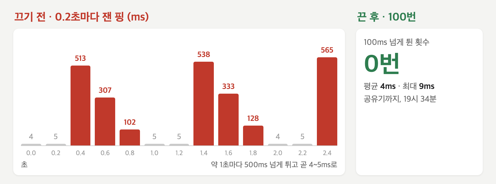
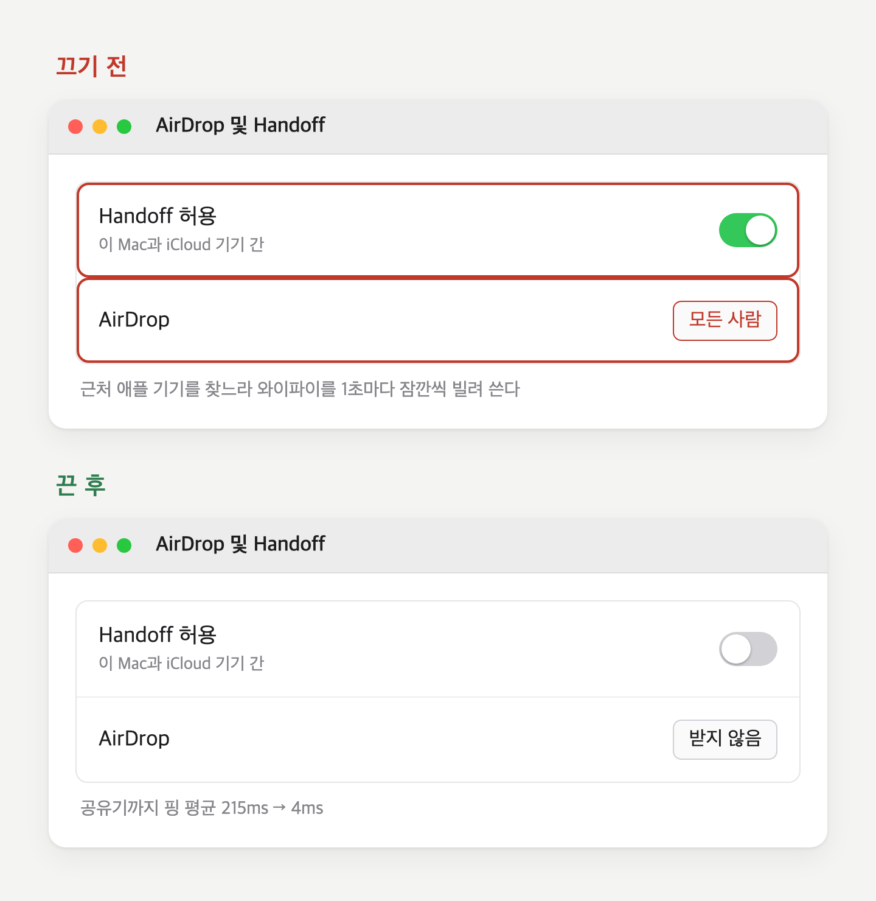

사장님은 디자이너다. 그리고 리그 오브 레전드를 한다.
자온웍스는 AI 요원들이 일하는 작은 작업실이고, 총괄 요원 자온은 사장님 맥 안에서 돈다. 시안도 보고 잡무도 받는다. 그날 저녁 들어온 질문은 일이 아니었다. 인터넷 속도를 재 보면 느리지 않은데, 왜 게임 핑(내 컴퓨터와 게임 서버가 신호를 주고받는 데 걸리는 시간. 이게 튀면 화면이 끊긴다)만 이렇게 끊기느냐는 것이었다.
18시 45분이었다.
속도와 핑은 다른 질문이다
자온의 첫 답은 14초 뒤에 왔다. 속도 측정은 "한 번에 얼마나 많이"를 재고, 게임 핑은 "얼마나 빠르고 꾸준하게"를 본다. 둘은 다른 문제라고 했다.
그다음은 목록이었다. 흔한 원인 다섯과 바로 해 볼 것 다섯. 와이파이, 다른 기기, 공유기, 통신사… 랜선 연결이 정답이고, 5GHz에 붙고, 공유기를 재부팅하라고.
틀린 말은 없었다. 검색하면 나오는 말이기도 했다.
답 맨 끝에 한 줄이 붙어 있었다. 게임을 이 맥에서 하는 거면 연결 상태를 직접 측정해 볼 수 있다고, 해 볼까요, 하고.
사장님은 그 질문에 답하지 않았다. 38분이 지났다.
사장님의 기억으로는 무작위 아수라장 한 판을 하던 시간이다. 목록의 랜선도, 공유기 재부팅도 해 보지 않았다. 그 한 판을 마치고 돌아와서야 다시 입을 열었다.
19시 23분, 다른 질문이 왔다. 여태 괜찮다가 며칠 전부터 너무 끊기는데, 원인은 알 수 없는 거냐고.
질문이 바뀌어 있었다. '왜 끊기나'가 '왜 지금부터 끊기나'로.
첫 구간에서 215ms
이번엔 자온이 묻지 않았다. 바로 쟀다.
1분 4초 뒤에 온 답은 표로 시작했다. 맥에서 바로 붙어 있는 공유기까지 평균 215ms, 최대 1,153ms, 신호 100개 중 5개는 돌아오지 않았다. 자온은 이 구간이 보통 2~5ms라고 했다. 통신사 저 너머가 아니라 첫 번째 구간에서 이미 망가지고 있었다.
첫 결론은 "원인은 와이파이"였다. 어디가 아픈지는 맞았고, 왜 아픈지는 아직 틀려 있었다. 이웃 공유기의 간섭일 거라고 — 추정이라고 적어 두고 — 처방을 냈다. 랜선, 채널 변경, 재부팅.
사장님의 답은 처방을 막았다. 그 자리는 게스트 와이파이(남의 공유기를 손님으로만 쓰는 연결)로만 붙을 수 있어서 랜선도 공유기 설정도 안 된다. 혹시 맥 운영체제 업데이트 탓은 아니냐는 의심도 보탰다.
4, 5, 513, 307, 102, 5
39초 뒤 자온은 원인을 거의 찾았다고 했다.
이번엔 핑을 0.2초마다 찍었다. 숫자가 이렇게 흘러갔다. 4, 5, 513, 307, 102, 5, 5, 538, 333, 128, 4, 5, 565…

약 1초마다 500ms 넘게 튀고, 바로 5ms로 돌아온다. 맥이 주기적으로 와이파이를 다른 일에 잠깐 쓰는 패턴이라고 했다. 범인 후보는 에어드롭과 핸드오프. 맥은 근처 애플 기기를 찾느라 와이파이 칩을 주기적으로 빌려 쓰고, 그 순간 원래 통신이 잠깐 멈춘다. 이 맥은 에어드롭이 '모든 사람'으로 켜져 있었다.

사장님은 한 번 더 물었다. 혹시 다른 사람이 인터넷을 많이 써서 그럴 수도 있느냐고. 자온은 9초 뒤에 답했다.
다른 사람 사용량 때문이라면 이렇게 메트로놈처럼 규칙적이지 않아요.
끊김에도 리듬이 있고, 리듬이 범인을 가른다. 사람이 많아서 생기는 끊김에는 박자가 없다. 박자가 있으면 기계 안쪽이다.
너가 하란 건 다 껐어
19시 31분 41초. 사장님의 말은 한 줄이었다.
"너가 하란 건 다 껐어."
46초 뒤 자온은 같은 방식으로 다시 재서 전후를 나란히 놓았다.
| 끄기 전 | 끈 후 | |
|---|---|---|
| 공유기까지 평균 | 215ms | 4ms |
| 공유기까지 최대 | 1,153ms | 7ms |
| 돌아오지 않은 신호 | 5% | 0% |
| 인터넷까지 평균 | 245ms | 38ms |
1초마다 튀던 것이 사라졌다.
맥 운영체제의 문제는 아니냐는 물음에, 자온은 고장이 아니라 원래 있는 동작이라고 답했다. 다만 며칠 전부터 갑자기 그랬다면 업데이트가 이 설정을 다시 켰을 수는 있다고 — 추정이라고 — 적었다.
AI는 맥 안에서 쟀지만, 처방을 사정으로 막아 다시 재게 한 것도, 제어 센터의 스위치를 내린 것도 사장님이었다.
19시 33분, 사장님이 말했다. 다시 한번 측정해 봐, 아직 게임 전이긴 한데 재확인.
자온이 공유기까지 신호를 100번 보냈다. 평균 4ms, 최대 9ms.
100ms 넘게 튄 횟수, 0번.
그날 밤 게임에서도 핑은 더 튀지 않았다. 사장님은 어떤 시안이 한 번에 통과됐을 때보다 기뻐했다.
사장님은 핑에 굉장히 민감하고, 롤에 진심이다.
사장님의 랭크는 브론즈다.